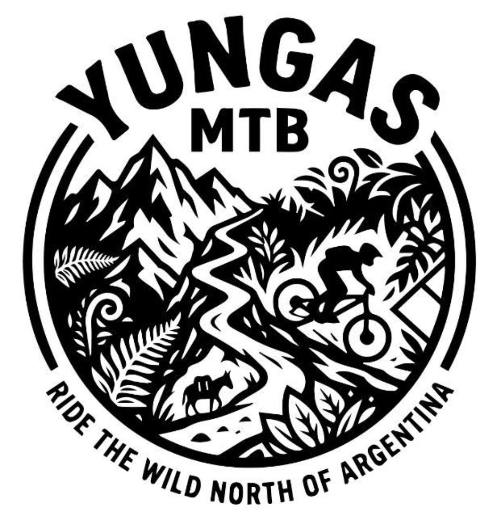

Senderos épicos de mountain bike en los paisajes más impresionantes de Argentina
Tres experiencias únicas en los paisajes más extremos de Salta
Ascenso a Cerro Elefante (1.926m) y descenso por Sendero de Los Hurones. Selva de yunga densa, fauna autóctona (zorros, hurones, cóndores), y vistas panorámicas del Valle de Lerma. Opción de asado en el rancho de Don Juan en la cima.
Descenso épico desde casi 4.000m de puna hasta la selva de Corralito. De la puna extrema (abierta, seca, silenciosa) a la yunga cerrada y húmeda sin transición. ~3.000m negativos en senderos reales, sin bike park.
Acceso a la precordillera profunda. Salida desde Salta por Ruta 51, paso por Campo Quijano (Portal de los Andes), llegada a Incamayo. Ascenso exigente a 3.463m con vistas 360° de cordillera, y descenso ancestral por senderos marcados por generaciones.
Comida simple y descanso en la casa de la familia Lazarte en Incamayo.
Conocé el sistema de clasificación de senderos
Momentos increíbles en los senderos de Salta
Abril a Octubre ofrece temperaturas agradables y menos lluvias. Evitá enero-febrero por las tormentas.
Salta es seca y la altura deshidrata rápido. Llevá al menos 2L de agua por cada 2 horas de ride.
La radiación UV es intensa por la altura. Usá protector, gafas y gorra siempre.
Informá a alguien tu ruta, llevá kit básico de reparación y celular con carga completa.
¿Tenés dudas o querés organizar una salida? ¡Escribinos!
Salta, Argentina
ponciopilato19800@gmail.com
+54 387 123 4567